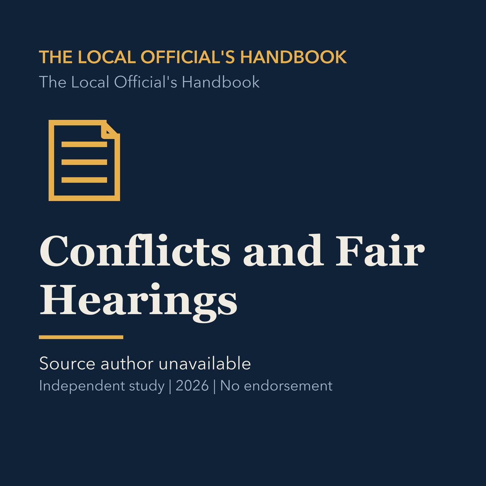

EPISODE 03
Conflicts and Fair Hearings
Explains financial conflicts, contract restrictions, campaign contributions, recusal, and fair-hearing duties.

- Stable GUID
61a9212f-f7fa-5d7d-9cf1-6f90c4aab0e5- Release
- local-officials-handbook-v2026.2
- SHA-256
99f8f3c7249bdf0984519f6ef00f87a704d369ae7311355920e0c08f981ada62